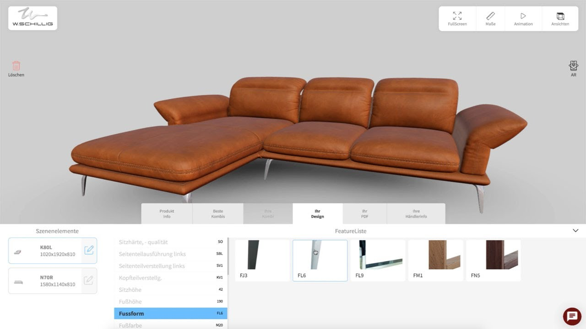
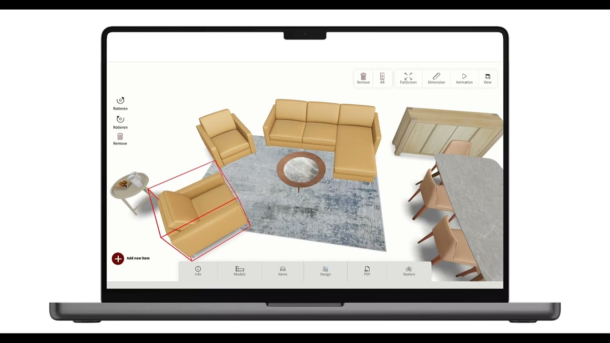
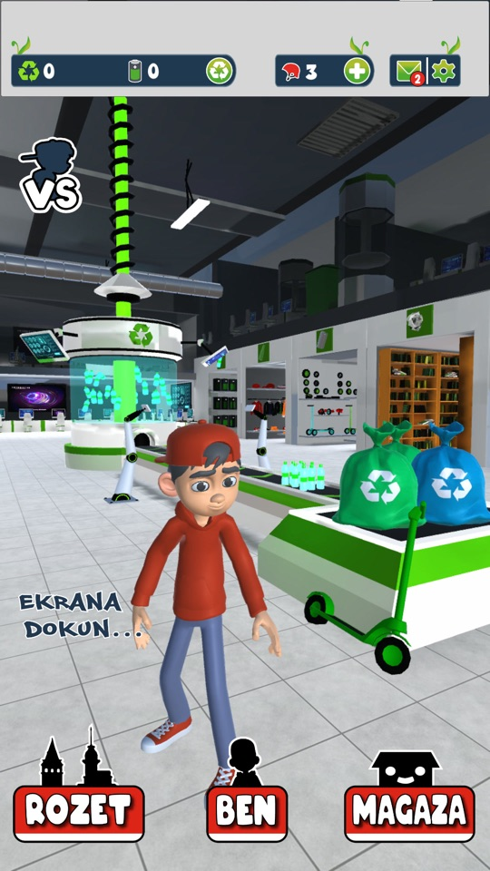
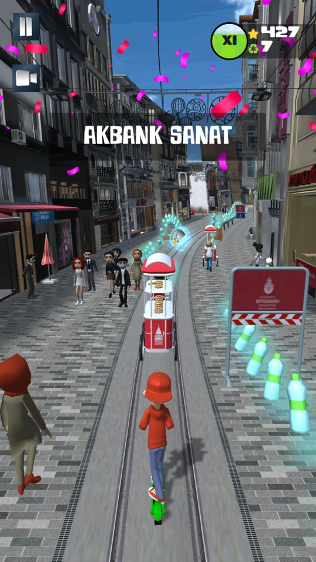
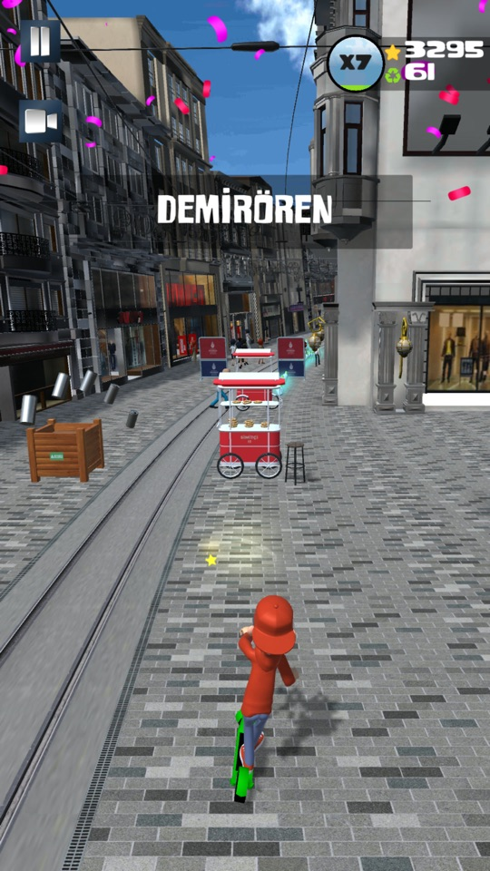
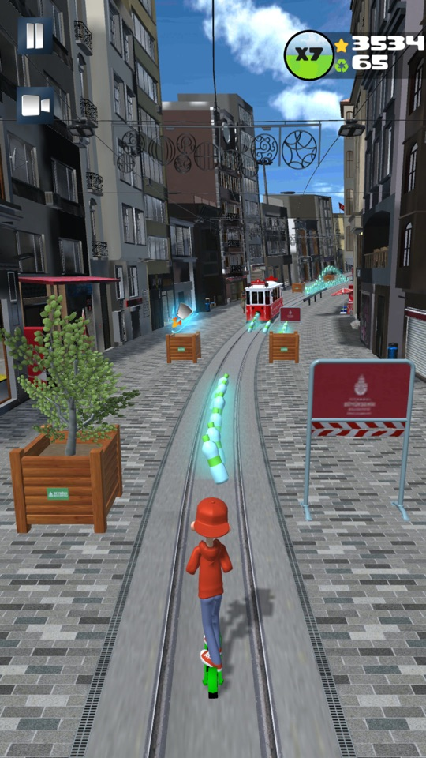

▶ Video (YouTube)
W.Schillig 3D-Web-Konfigurator mit ARW.Schillig 3D web configurator with AR
TD Yazılım / Tablet Dekor · Teamprojektteam project
Polstermöbel im Browser in 3D konfigurieren und anschließend per Augmented Reality im eigenen Raum ansehen, auf iOS und Android.
Configure upholstered furniture in 3D in the browser, then view the result in your own room with augmented reality on iOS and Android.
Three.jsJavaScriptWeb-ARiOS · Android

▶ Video (YouTube)
Tablet Dekor
TD Yazılım · Teamprojektteam project · Deutscher Exzellenz-Preis 2020
Möbelkonfigurations-App für Handel und Hersteller, ausgezeichnet mit dem Deutschen Exzellenz-Preis 2020. Im Einsatz unter anderem bei der Willi Schillig Polstermöbel GmbH und der Zorlu Holding.
Furniture configuration app for retailers and manufacturers, winner of the German Excellence Award 2020. Used by Willi Schillig Polstermöbel and Zorlu Holding, among others.
UnityC#ARMobile · Desktop
Produktkonfigurator für modulare SofasProduct configurator for modular sofas
Freelance · seit 2025 · alleinige Verantwortung für den CodeFreelance · since 2025 · sole owner of the codebase
Konfigurator auf Basis von Unity 6. Die 3D-Modelle und Materialien liefert ein 3D-Artist, Architektur und Code stammen von mir.
Configurator built on Unity 6. A 3D artist supplies models and materials; architecture and code are mine.
- Maße ändern sich stufenlos über Blendshapes; Stoff, Oberfläche und Keder sind frei wählbar.
- Der Produktkatalog wird über eine REST-API aus dem Backend aufgebaut.
- Stofftexturen werden heruntergeladen und gecacht, einzeln oder gesammelt.
- Eine automatisierte Render-Pipeline mit Blender Cycles erzeugt die Produktbilder (GLB-Export mit Manifest).
- Echtzeit-Darstellung mit linearem Farbraum, HDRI-Umgebungslicht, Kontaktschatten und Ambient Occlusion.
- Dimensions change continuously through blend shapes; fabric, finish and welting are freely selectable.
- The product catalogue is built from the backend through a REST API.
- Fabric textures are downloaded and cached, one by one or in bulk.
- An automated render pipeline with Blender Cycles produces the product images (GLB export with manifest).
- Real-time look with linear colour space, HDRI ambient light, contact shadows and ambient occlusion.
Unity 6C#REST APIBlender CyclesAzure DevOps
Scootour Istanbul
TD Yazılım · Mobile-Spielmobile game
Endless Runner durch das historische Istanbul: Mit dem Roller geht es über die İstiklal-Straße, vorbei an Orten wie Akbank Sanat und Demirören. Man weicht der historischen Straßenbahn aus und sammelt Plastikflaschen ein. Das Spiel will auf Klimawandel und Recycling aufmerksam machen.
Endless runner through historic Istanbul: ride a scooter down İstiklal Avenue past places like Akbank Sanat and Demirören, dodge the historic tram and collect plastic bottles. The game sets out to raise awareness of climate change and recycling.
- Anmeldung über Google Play Games und Sign in with Apple, Spielerdaten in Firebase (Authentication, Realtime Database).
- Missionen, Abzeichen und Shop; Werbung über AdMob.
- Curved-World-Shader und gebackene Lightmaps.
- 2026 auf Unity 6 migriert, Firebase, AdMob und Play Games aktualisiert; der Android-Build erfüllt die 16-KB-Page-Size-Vorgabe von Google Play.
- Sign-in with Google Play Games and Sign in with Apple, player data in Firebase (Authentication, Realtime Database).
- Missions, badges and a shop; ads through AdMob.
- Curved-world shader and baked lightmaps.
- Migrated to Unity 6 in 2026 with updated Firebase, AdMob and Play Games SDKs; the Android build meets Google Play's 16 KB page size requirement.
UnityC#FirebaseAdMobiOS · Android



